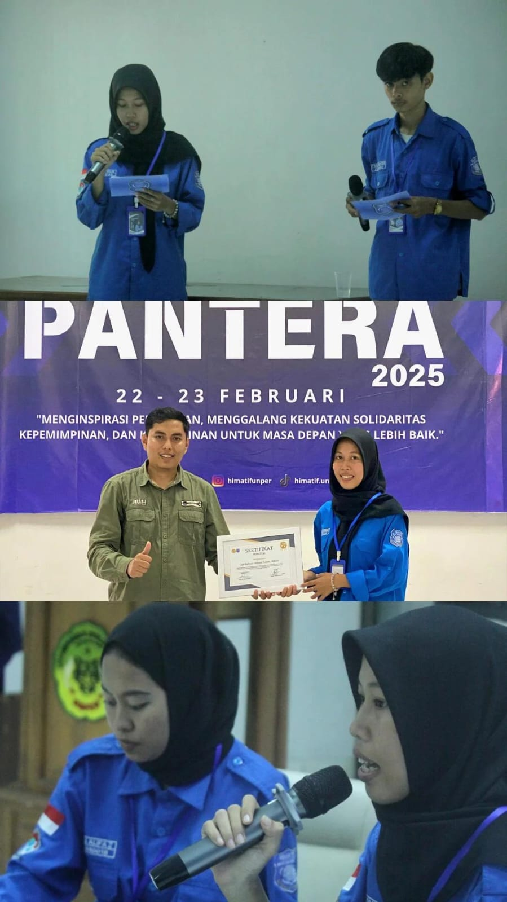
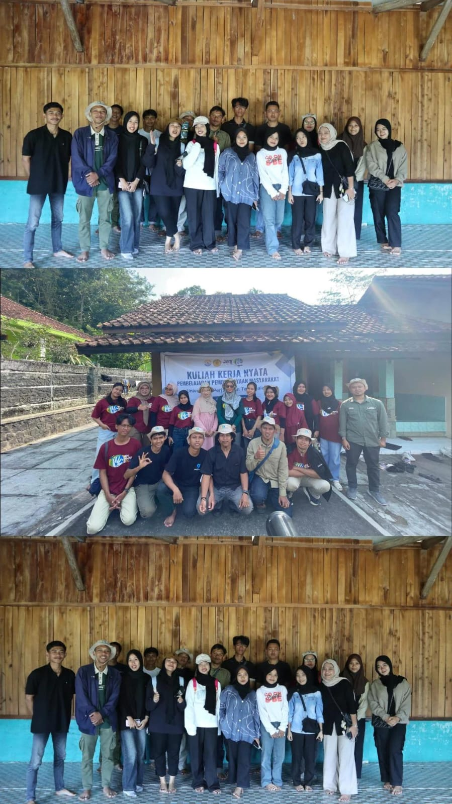
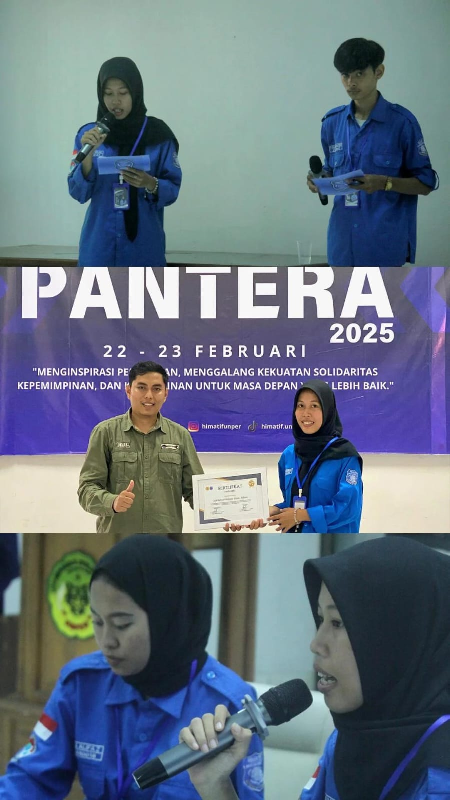
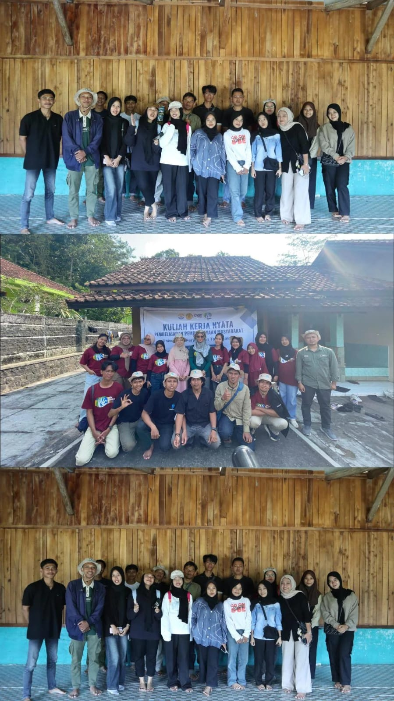

HELLO
Saya Selvia Lovelin
Teknik Informatika
Mahasiswa Teknik Informatika semester 5 dengan pengalaman pengembangan sistem informasi berbasis web dan aktif dalam organisasi.
HELLO
Mahasiswa Teknik Informatika semester 5 dengan pengalaman pengembangan sistem informasi berbasis web dan aktif dalam organisasi.

Saya Selvia Lovelin, mahasiswa Teknik Informatika yang memiliki minat pada pengembangan sistem informasi berbasis web. Saya terbiasa bekerja secara terstruktur, bekerja dalam tim, dan bertanggung jawab terhadap tugas yang diberikan. Memiliki pengalaman dalam pengembangan beberapa proyek website serta aktif dalam organisasi dan kepanitiaan, yang melatih kemampuan komunikasi, manajemen waktu, dan profesionalisme. Saya siap belajar, berkembang, dan berkontribusi dalam lingkungan kerja profesional.
Project Manager & Full Stack Developer
Sistem informasi pengelolaan Edotel berbasis web untuk manajemen data, reservasi, dan administrasi.
Tech Stack: PHP, MySQL, HTML, CSS, JavaScript
View WebsiteWeb Developer (Frontend & Backend)
Website resmi desa yang menampilkan profil, berita, dan informasi publik yang dikelola melalui admin panel.
Tech Stack: PHP, MySQL, HTML, CSS, JavaScript
View WebsiteProgrammer
Sistem peta bencana berbasis web untuk pengelolaan dan visualisasi data lokasi bencana.
Tech Stack: PHP, MySQL, JavaScript, HTML. CSS
View Website 





Silakan hubungi saya melalui: